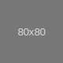

ボーダー
Border
Additive
.border(-top|-right|-bottom|-left)?
方向指定は「その方向だけボーダーを付ける」という意味。
.border
.border-top
.border-right
.border-bottom
.border-left
Subtractive
.border(-top|-right|-bottom|-left)?-0
必ず .border と組で用いる。方向指定は「その方向以外にボーダーを付ける」という意味。
.border.border-0
.border.border-top-0
.border.border-right-0
.border.border-bottom-0
.border.border-left-0
ボーダー色
.border.border-(primary|secondary|success|danger|warning|info|light|dark|white)
これも必ず .border と組で用いる。
.border.border-primary
.border.border-secondary
.border.border-success
.border.border-danger
.border.border-warning
.border.border-info
.border.border-light
.border.border-dark
.border.border-white
角の丸め
.rounded(-top|-right|-bottom|-left|-circle|-0)?
img.rounded
img.rounded-topimg.rounded-rightimg.rounded-bottomimg.rounded-leftimg.rounded-circleimg.rounded-0クリアフィックス
例題としてブロック要素の内部にフローティング要素を左右に配置する場合を考える。
divimg.float-leftimg.float-rightp(高さが左右フローティング要素より低いインライン要素)
しかし単純に作成すると次のような問題が起きる(実際に作った例)。
div のみ
高さが左右フローティングより低いテキスト
これはフローティングによる副作用で、div 内部コンテントの高さ計算にフローティング要素は含まれないため divは全体を覆ってくれない。このような場合は .clearfix を用いることにより解決できる。
div.clearfix
高さが左右フローティングより低いテキスト
これは古くからある有名なテクニック(元々はブラウザのバグ回避方法)。しかしBootstrap 4はflexboxが使えるモダンブラウザが前提なので今後はflexboxを利用すべき。例を示す(
.clearfix 不使用、詳しい設定はソースを参照)。
高さが左右フローティングより低いテキスト
クローズアイコン
モーダル や アラート の「閉じる」用ボタン(アイコン)として × ( × )を用いる
例: button.close の内部では次のように表示する
button.close- アクセシビリティ属性
aria-label="Close" span- アクセシビリティ属性
aria-hidden="true" - テキスト
×
- アクセシビリティ属性
- アクセシビリティ属性